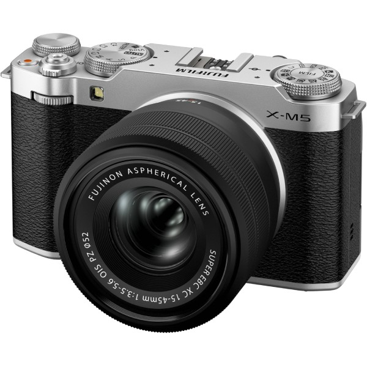

Улучшайте то, что вы создаете. Улучшайте то, как вы создаете.
Для амбициозных создателей, желающих отказаться от смартфона и поднять свой контент на новый уровень, FUJIFILM предлагает черную беззеркальную камеру X-M5 , чья компактность дополняется мощным датчиком APS-C X-Trans 4 CMOS, удобным для аудио и видео интерфейсом и сменным креплением объектива, совместимым со всем семейством объективов FUJIFILM с креплением X. Добавьте к этому 20 их известных рецептов моделирования пленки, их новейшую технологию автофокусировки с обнаружением объекта на основе ИИ и неподвластный времени дизайн компании в стиле ретро, и X-M5 готова преобразить ваш способ творчества.
Больше датчик, лучше изображение.
Первая камера XM за более чем десятилетие, X-M5 может похвастаться тем же 26,1-мегапиксельным датчиком X-Trans 4 CMOS, что и ее вирусный кузен X100V, и тем же X-Processor 5, что и X100VI. Превосходные возможности X-Trans 4 по сбору света, превышающие в 16 раз размер среднего датчика смартфона, означают более насыщенные цвета, большую детализацию и лучшую производительность при слабом освещении. Конструкция датчика представляет собой рандомизированный массив пикселей, который имитирует органическую природу пленки, создавая тонкие цвета и переходы, одновременно уменьшая цифровые артефакты. Более крупный датчик APS-C создает меньшую глубину резкости, открывая более глубокое размытие фона и разделение объектов.
Оптимизированный звук, видео 6K.
X-M5 была разработана для решения всего спектра задач создания современного контента, превосходя как в аудио-, так и в видеосъемке. Камера имеет три встроенных микрофона и четыре режима захвата звука - Surround, Front Priority, Back Priority и Front & Back Priority - для оптимизации сбора звука в определенных ситуациях. 3,5-миллиметровый разъем для микрофона обеспечивает дополнительный контроль над звуковой средой, а новые встроенные алгоритмы камеры позволяют как улучшать звучание голоса, так и снижать уровень окружающего шума.